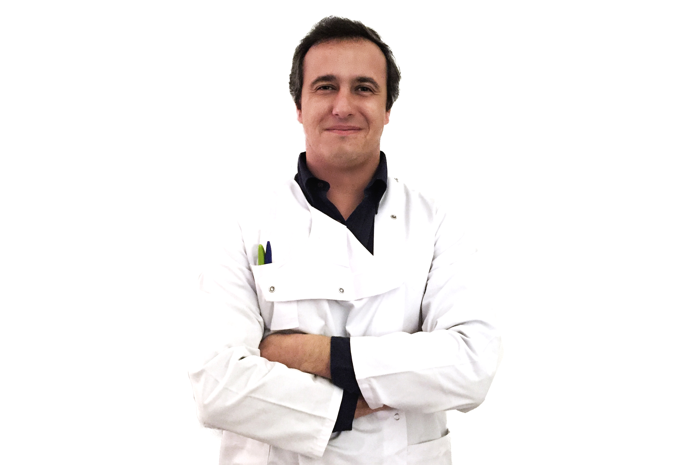

<section>
    <div class="row">
        <div class="column ocuppies_1_of_2">
            <section>
                
            </section>
        </div>

         <div class="column ocuppies_1_of_2">
            <section class="conteudoQuemSou">
              
              <section>
                <p>
                  O Dr. Miguel Castelo Branco, descende de uma família de quatro gerações de farmacêuticos mas a Homeopatia é sua paixão. Desde cedo no início da sua licenciatura em Ciências Farmacêuticas tomou conhecimento da Homeopatia através do Dr. Hans Groenendijk (Homeopata Holandês) e desde então a motivação não parou.</p>

                <p>Como formação curricular para além da licenciatura de Ciências Farmacêuticas com mestrado integrado em Marketing Farmacêutico, detém uma Pós-graduação de Homeopatia através do Instituto de Medicina Tradicional (IMT) e um Curso Avançado de Homeopatia leccionado pela Escola de Pós-graduação em Saúde e Gestão pertencente à Associação Nacional de Farmácias (ANF).<p>

                <p>Em termos profissionais a nível nacional trabalhou na farmácia comunitária, Farmácia Central e na indústria farmacêutica, Actelion Pharmaceuticals Ltd na área dos assuntos regulamentares. Posteriormente trabalhou no Infarmed,. I.P. no departamento de Dispositivos Médicos. Teve ainda uma experiência internacional, tendo trabalhado em Viena de Áustria, também na área de indústria farmacêutica, mais propriamente nos registos e marketing farmacêutico.
                </p>
              </section>
            </section>
        </div>
    </div>
</section>
